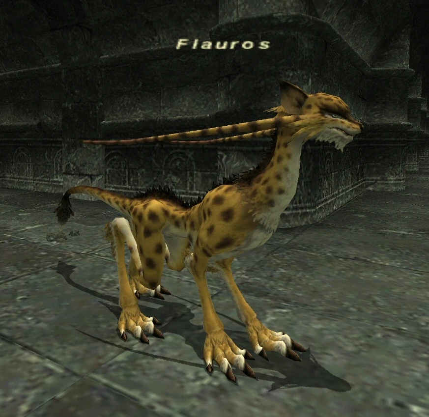

Level 75 reference · Zenith rules
|
Job: Warrior Notorious Monster |
 Image source |


|
Zone |
Level |
Drops |
Steal |
Spawns |
Notes | ||||||
|
59-60 |
1 |
| |||||||||
|
HP = Detects Low HP; M = Detects Magic; Sc = Follows by Scent; T(S) = True-sight; T(H) = True-hearing JA = Detects job abilities; WS = Detects weaponskills; Z(D) = Asleep in Daytime; Z(N) = Asleep at Nighttime | |||||||||||
 Image source
Image source
Notes:
- Lottery spawn from the Torama around (K-6) on the first map.
- Drops around 2400 gil
- Special Attacks: Mighty Strikes
- Flauros Whisker is 100% drop.
Adapted from Eden Wiki: Flauros · Contributors and history · CC BY-SA 4.0. Revision 1668. Layout, links and optional background text adapted for Zenith.